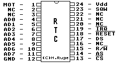

Previous
Next
TOC
Die Pinbelegung des Uhrenchips im Hades
Achtung, beim Hades wird ein DS12887 eingesetzt der im gegensatz
zum Uhrenchip im TT030 und Falcon030 statt 50 Bytes über insgesamt
114 Bytes verfügt (plus 14 Bytes für Uhren- und Kontrollregister).

Die verwendeten RealTimeClocks mit integrierten NV RAM haben keinen
Ramclear Eingang, das heißt man kann diese ICs nicht durch setzen
eines Jumpers löschen wenn man mal die Parameter verstellt hat und
der Computer nicht bootet (nur die Dallas Chips DS1287A, DS12887A
sowie der DS12B887 haben die (/RCLR) Ramclearfunktion auf Pin 21).
Kapitel Die Pinbelegung des Uhrenchips im Hades, Seite 1